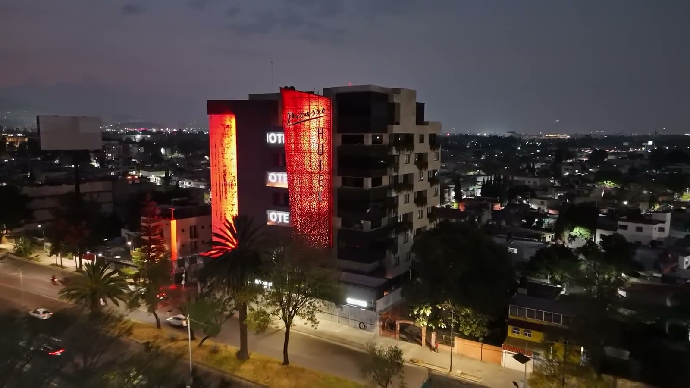
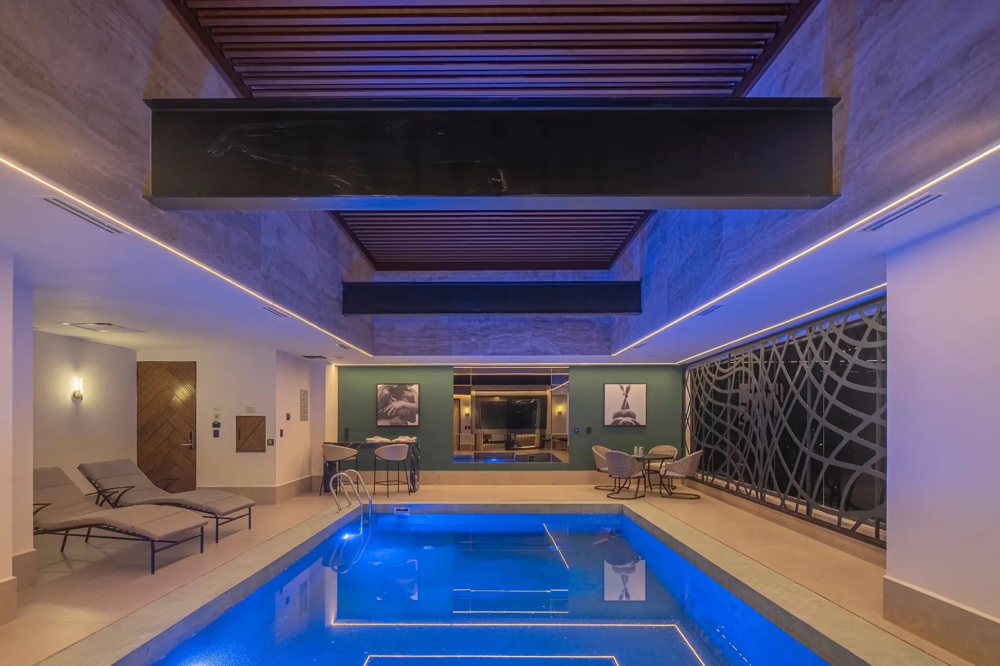

Motel Picasso · Mantenimiento y limpieza
Revisar, documentar y resolver.
La app de inspecciones de las seis casas Picasso: el gerente y la ama de llaves revisan cada cuarto desde el celular, cada falla queda con foto y los dueños ven todo en una sola vista.
- Vaqueritos
- Lerma
- Toluca
- Circuito
- Churubusco
- Periférico
La casa nueva
Picasso Vaqueritos, suite por suite.
Siete tipos de suite, de la sencilla a la de alberca con terraza. En la app, lo que tiene cada cuarto entra a su lista de revisión: el gerente revisa que funcione y la ama de llaves que esté limpio.
Una sola app
Seis casas, la misma vara.
Cada sucursal con sus cuartos, su personal y sus reglas. Los dueños las comparan con los mismos indicadores: revisiones hechas, folios abiertos, tiempo de solución y cuartos sin rentar.
El video
La app, de principio a fin.
Grabaciones reales de la versión de prueba: la revisión del cuarto, el folio con foto, la reparación, el panel de las seis casas y los reportes.

Que ningún cuarto se rente sin estar listo.
La versión de prueba ya funciona con datos de ejemplo. Se entra con un toque como dueño, administración, gerente o ama de llaves de cualquier sucursal.